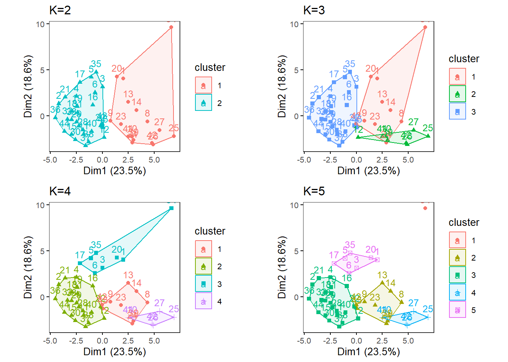
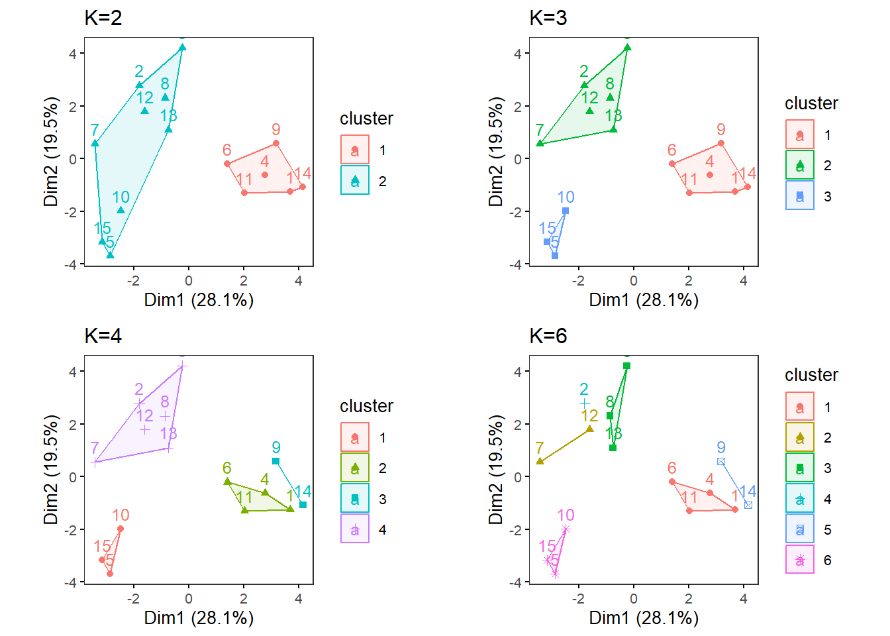

k-means
Introduction
In this section, we are going to perform k-means analysis for each of Nutrient as is, Nutrient average, Food categories as is, and Food categories average.
Before proceeding, ensure to have four directories (folders) named as:
- kmeans_Nut_asis
- kmeans_Nut_ave
- kmeans_Cat_asis
- kmeans_Cat_ave
K-means analysis results will be saved in this folder. You can change those directory names, but if you do so, you will need to modify the directory name, “res_dir_xxx_xxxx”, to match your new directory name.
Load functions and packages
Name the path to DietDiveR directory where input files are pulled.
main_wd <- "~/GitHub/DietDiveR"Load necessary packages.
library(ggplot2)
library(ggfortify)
library(cluster)
library(factoextra)## Welcome! Want to learn more? See two factoextra-related books at https://goo.gl/ve3WBaSet your ggplot2 theme.
theme_set(theme_bw(base_size = 14))Import source code to run the analyses to follow.
source("lib/specify_data_dir.R")
source("lib/k-means.R")You can come back to the main directory by:
setwd(main_wd)Specify the directory where the data is.
SpecifyDataDirectory(directory.name= "eg_data/VVKAJ/")Nutrient data as is, processed for clustering analyses
Load Nut_asis data.
Tot_m_QCed_Nut_asis <- read.table(file="VVKAJ_Tot_m_QCed_Nut_asis_c_rv.txt", sep="\t", header=T)Scale your input file and name it as k-means_input.
kmeans_input <- scale(Tot_m_QCed_Nut_asis)Ensure your input file has the correct number of rows and columns.
dim(kmeans_input)## [1] 45 39Specify the directory (folder) to save the results.
res_dir_nut_asis = "kmeans_Nut_asis"Specify the prefix of filenames to be saved.
res_prefix_nut_asis = "VVKAJ_Nut_asis"Run the elbow, silhouette, and gap methods to find an optimum K (number of clusters). Do not alter the name of the input file: kmeans_input. This function below assumes that the input is named as kmeans_input. You can only run those three methods for K = 1 through (number of observations - 1). The gap method output will be printed on the Console. The gap values are plotted in xxx_gapmethod.pdf.
ChooseK(out.dir= res_dir_nut_asis, out.prefix= res_prefix_nut_asis)## Clustering Gap statistic ["clusGap"] from call:
## clusGap(x = kmeans_input, FUNcluster = kmeans, K.max = k.values[length(k.values)], B = 50, nstart = 25)
## B=50 simulated reference sets, k = 1..14; spaceH0="scaledPCA"
## --> Number of clusters (method 'firstmax'): 13
## logW E.logW gap SE.sim
## [1,] 4.534176 4.805370 0.2711936 0.02298366
## [2,] 4.413634 4.690320 0.2766854 0.01970103
## [3,] 4.324135 4.612156 0.2880211 0.01952644
## [4,] 4.232962 4.546859 0.3138978 0.02019184
## [5,] 4.172491 4.489167 0.3166767 0.01997891
## [6,] 4.112269 4.437340 0.3250711 0.01906811
## [7,] 4.060030 4.389245 0.3292146 0.01932907
## [8,] 4.002075 4.343304 0.3412295 0.01957126
## [9,] 3.941963 4.298034 0.3560717 0.02008874
## [10,] 3.885026 4.253908 0.3688828 0.02016421
## [11,] 3.819605 4.209691 0.3900865 0.02020015
## [12,] 3.761350 4.166198 0.4048475 0.01974978
## [13,] 3.707321 4.122736 0.4154147 0.02010712
## [14,] 3.665302 4.079125 0.4138227 0.02003152This code will generate three output files all at once in the res_dir_xxx_xxxx:
| Output file postfix | File content |
|---|---|
| _elbowmethod.pdf | Shows total within−clusters sum of squares for each K. |
| _gapmethod.pdf | Shows the Gap statistic (k) for each K, and if the factoextra package is used, the optimal K is marked by a dotted line. |
| _silhouettemethod.pdf | Shows the Average silhouette width (~ goodness of fit) for each K, and if the factoextra package is used, the optimal K is marked by a dotted line. |
Look at the three figures generated by the ChooseK function above. The elbow and gap methods did not give a distinct peak, but the silhouette method gave a peak at K=4. K=2, 3, 4, and 5 also have relatively high silhouette width (~goodness of fit).

VVKAJ_Nut_asis_elbowmethod.pdf

VVKAJ_Nut_asis_gapmethod.pdf

VVKAJ_Nut_asis_silhouettemethod.pdf
With specific K values in mind, perform k-means analysis with one specified K. This will save Dim1 x Dim2 plot as a .pdf file in your out.dir. Change the filename as necessary.
OneK(myK= 4, out.dir= res_dir_nut_asis, out.fn = "VVKAJ_Nut_asis_K4")oneKplotOr try multiple Ks and print the biplots in one panel. Likewise, This will save a Dim1 x Dim2 plot for each of the chosen K as a .pdf file in your out.dir. Change the filename to be saved as a PDF as necessary. This MultipleK function uses the factoextra and gridExtra packages.
MultipleK(myKs = c(2,3,4,5), out.dir = res_dir_nut_asis, out.fn = "VVKAJ_Nut_asis_K2-5")
Nutrient data averaged across days, processed for clustering analyses
Load Nut_ave data.
Tot_m_QCed_Nut_ave <- read.table(file="VVKAJ_Tot_mean_m_QCed_Nut_ave_c_rv.txt", sep="\t", header=T)Scale your input file and name it as k-means_input.
kmeans_input <- scale(Tot_m_QCed_Nut_ave)Ensure your input file has the correct number of rows and columns.
dim(kmeans_input)## [1] 15 29Specify the directory (folder) to save the results.
res_dir_nut_ave = "kmeans_Nut_ave" Specify the prefix of filenames to be saved.
res_prefix_nut_ave = "VVKAJ_Nut_ave"Run elbow, silhouette, and gap methods to find an optimum K (number of clusters).
ChooseK(out.dir= res_dir_nut_ave, out.prefix= res_prefix_nut_ave)## Clustering Gap statistic ["clusGap"] from call:
## clusGap(x = kmeans_input, FUNcluster = kmeans, K.max = k.values[length(k.values)], B = 50, nstart = 25)
## B=50 simulated reference sets, k = 1..14; spaceH0="scaledPCA"
## --> Number of clusters (method 'firstmax'): 1
## logW E.logW gap SE.sim
## [1,] 3.2630253 3.2663851 0.003359764 0.05234145
## [2,] 3.0784342 3.0438595 -0.034574707 0.05372168
## [3,] 2.9161106 2.8695076 -0.046603006 0.05471007
## [4,] 2.7752731 2.7095985 -0.065674514 0.05519485
## [5,] 2.6142074 2.5583486 -0.055858850 0.05523991
## [6,] 2.4625300 2.4007042 -0.061825789 0.05691960
## [7,] 2.2924520 2.2365856 -0.055866370 0.06063636
## [8,] 2.0889716 2.0602011 -0.028770473 0.06452527
## [9,] 1.8802611 1.8654634 -0.014797657 0.06983161
## [10,] 1.6202210 1.6415037 0.021282670 0.07686758
## [11,] 1.3401983 1.3770350 0.036836669 0.08485334
## [12,] 0.9895242 1.0433402 0.053816022 0.09208387
## [13,] 0.5150737 0.5792387 0.064165052 0.10424095
## [14,] -0.4562883 -0.1938366 0.262451756 0.12409388With specific K values in mind, perform k-means analysis with one specified K.
OneK(myK= 5, out.dir= res_dir_nut_ave, out.fn = "VVKAJ_Nut_ave_K5") oneKplotTry multiple Ks and print the biplots in one panel.
MultipleK(myKs = c(2,3,4,5), out.dir = res_dir_nut_ave, out.fn = "VVKAJ_Nut_ave_K2-5")
Food categories data as is, processed for clustering analyses
Load Cat_asis data.
Tot_m_QCed_Cat_asis <- read.table(file="VVKAJ_Tot_m_QCed_Cat_asis_c_rv.txt", sep="\t", header=T)Scale your input file and name it as k-means_input.
kmeans_input <- scale(Tot_m_QCed_Cat_asis)Ensure your input file has the correct number of rows and columns.
dim(kmeans_input)## [1] 45 30Specify the directory (folder) to save the results.
res_dir_cat_asis = "kmeans_Cat_asis" Specify the prefix of filenames to be saved.
res_prefix_cat_asis = "VVKAJ_Cat_asis"Run elbow, silhouette, and gap methods to find an optimum K (number of clusters).
ChooseK(out.dir= res_dir_cat_asis, out.prefix= res_prefix_cat_asis)## Clustering Gap statistic ["clusGap"] from call:
## clusGap(x = kmeans_input, FUNcluster = kmeans, K.max = k.values[length(k.values)], B = 50, nstart = 25)
## B=50 simulated reference sets, k = 1..14; spaceH0="scaledPCA"
## --> Number of clusters (method 'firstmax'): 1
## logW E.logW gap SE.sim
## [1,] 4.418470 4.704881 0.2864109 0.02523690
## [2,] 4.324929 4.588765 0.2638362 0.01947462
## [3,] 4.239884 4.525344 0.2854598 0.01838547
## [4,] 4.170741 4.469961 0.2992198 0.01916238
## [5,] 4.115400 4.419720 0.3043203 0.01845343
## [6,] 4.073602 4.372798 0.2991961 0.01814911
## [7,] 4.022522 4.328058 0.3055360 0.01864750
## [8,] 3.972951 4.283995 0.3110447 0.01873790
## [9,] 3.922178 4.241455 0.3192770 0.01925196
## [10,] 3.877252 4.198902 0.3216500 0.02015669
## [11,] 3.826764 4.156332 0.3295683 0.02069141
## [12,] 3.783749 4.114248 0.3304992 0.02096826
## [13,] 3.724537 4.071392 0.3468548 0.02156035
## [14,] 3.672544 4.028501 0.3559563 0.02157291With specific K values in mind, perform k-means analysis with one specified K.
OneK(myK=3, out.dir= res_dir_cat_asis, out.fn = "VVKAJ_Cat_asis_K3")oneKplotTry multiple Ks and print the biplots in one panel.
MultipleK(myKs = c(3,4,5,6), out.dir = res_dir_cat_asis, out.fn = "VVKAJ_Cat_asis_K3-6")
Food categories data averaged across days, processed for clustering analyses
Load Cat_ave data.
Tot_m_QCed_Cat_ave <- read.table(file="VVKAJ_Tot_mean_m_QCed_Cat_ave_c_rv.txt", sep="\t", header=T)Scale your input file and name it as k-means_input.
kmeans_input <- scale(Tot_m_QCed_Cat_ave)Ensure your input file has the correct number of rows and columns.
dim(kmeans_input)## [1] 15 25Specify the directory (folder) to save the results.
res_dir_cat_ave = "kmeans_Cat_ave" Specify the prefix of filenames to be saved.
res_prefix_cat_ave = "VVKAJ_Cat_ave"Run elbow, silhouette, and gap methods to find an optimum K (number of clusters).
ChooseK(out.dir= res_dir_cat_ave, out.prefix= res_prefix_cat_ave)## Clustering Gap statistic ["clusGap"] from call:
## clusGap(x = kmeans_input, FUNcluster = kmeans, K.max = k.values[length(k.values)], B = 50, nstart = 25)
## B=50 simulated reference sets, k = 1..14; spaceH0="scaledPCA"
## --> Number of clusters (method 'firstmax'): 1
## logW E.logW gap SE.sim
## [1,] 3.19066329 3.2065563 1.589302e-02 0.04676962
## [2,] 3.00741139 3.0073421 -6.932819e-05 0.05303620
## [3,] 2.84352271 2.8345688 -8.953876e-03 0.05360053
## [4,] 2.69703510 2.6806427 -1.639236e-02 0.05241182
## [5,] 2.55196510 2.5335184 -1.844667e-02 0.05350532
## [6,] 2.42386845 2.3824293 -4.143910e-02 0.05665905
## [7,] 2.28405617 2.2215331 -6.252309e-02 0.06034179
## [8,] 2.12673548 2.0470466 -7.968886e-02 0.06266336
## [9,] 1.94250302 1.8514305 -9.107256e-02 0.06602434
## [10,] 1.72955188 1.6278869 -1.016650e-01 0.07192173
## [11,] 1.46373426 1.3661157 -9.761852e-02 0.07723756
## [12,] 1.11437462 1.0370556 -7.731898e-02 0.08325284
## [13,] 0.64687840 0.5735845 -7.329393e-02 0.09188411
## [14,] -0.08712478 -0.2004423 -1.133175e-01 0.12555598With specific K values in mind, perform k-means analysis with one specified K.
OneK(myK= 4, out.dir= res_dir_cat_ave, out.fn = "VVKAJ_Cat_ave_K4") oneKplotTry multiple Ks and print the biplots in one panel.
MultipleK(myKs = c(2,3,4,6), out.dir = res_dir_cat_ave, out.fn = "VVKAJ_Cat_ave_K2-4&6")
Come back to the main directory before you start running another script.
setwd(main_wd)